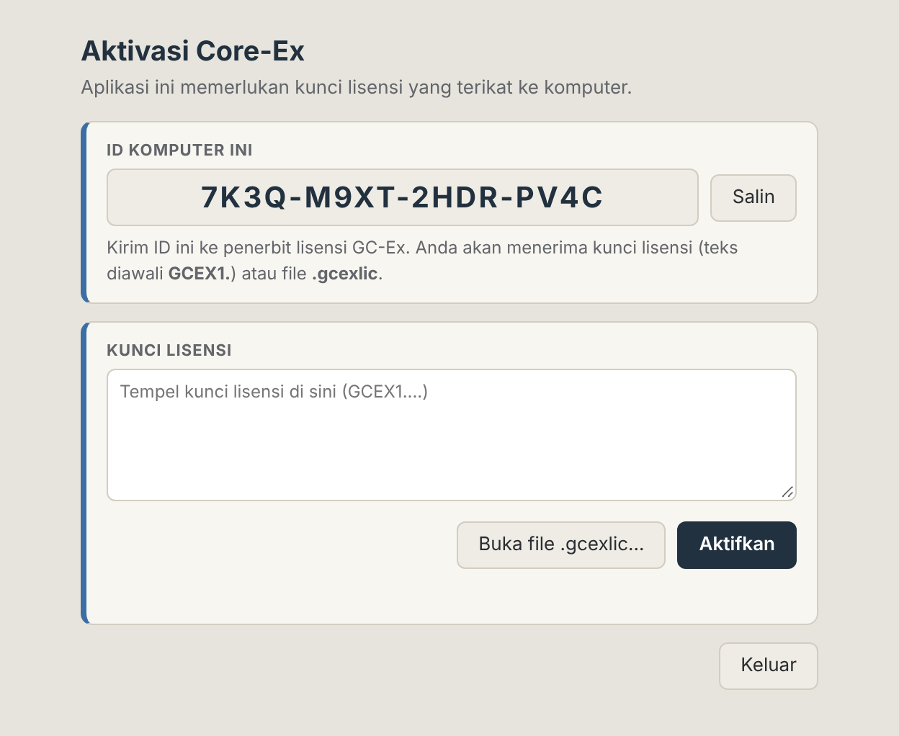
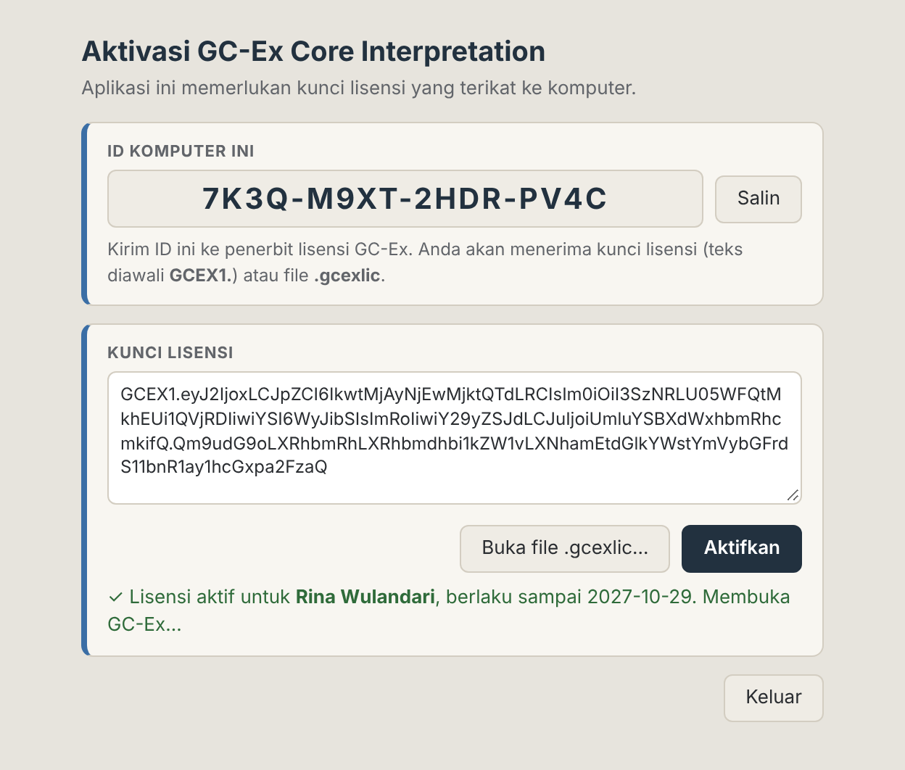
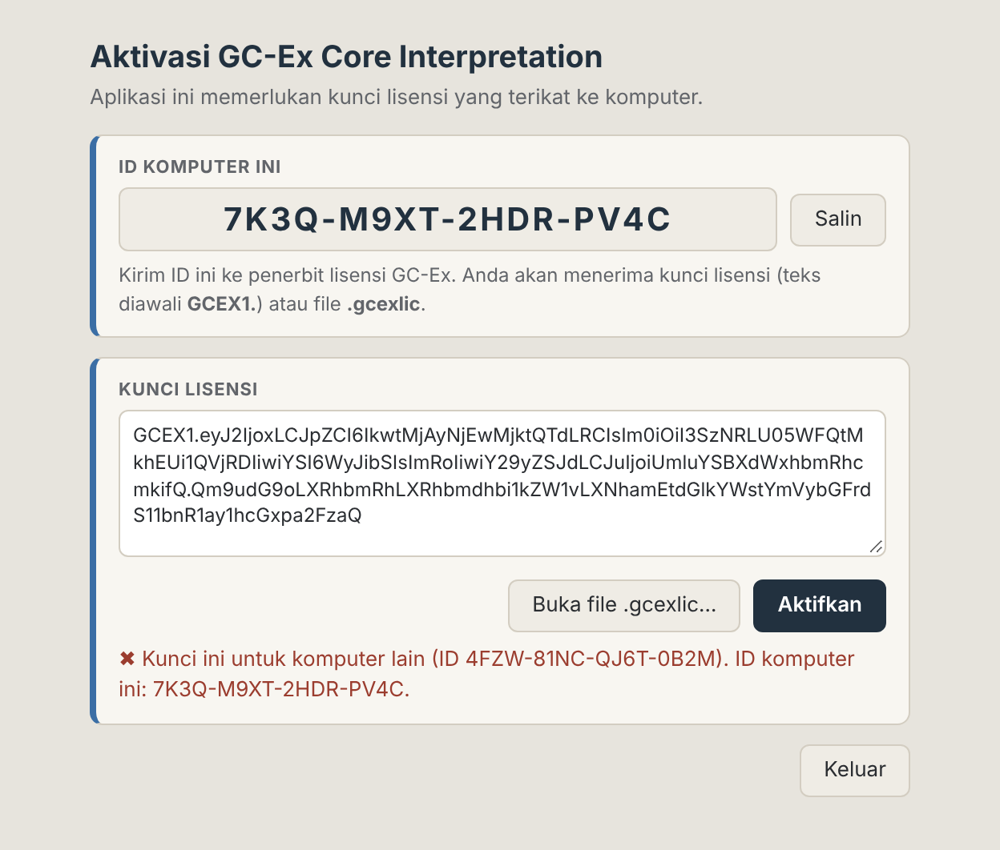
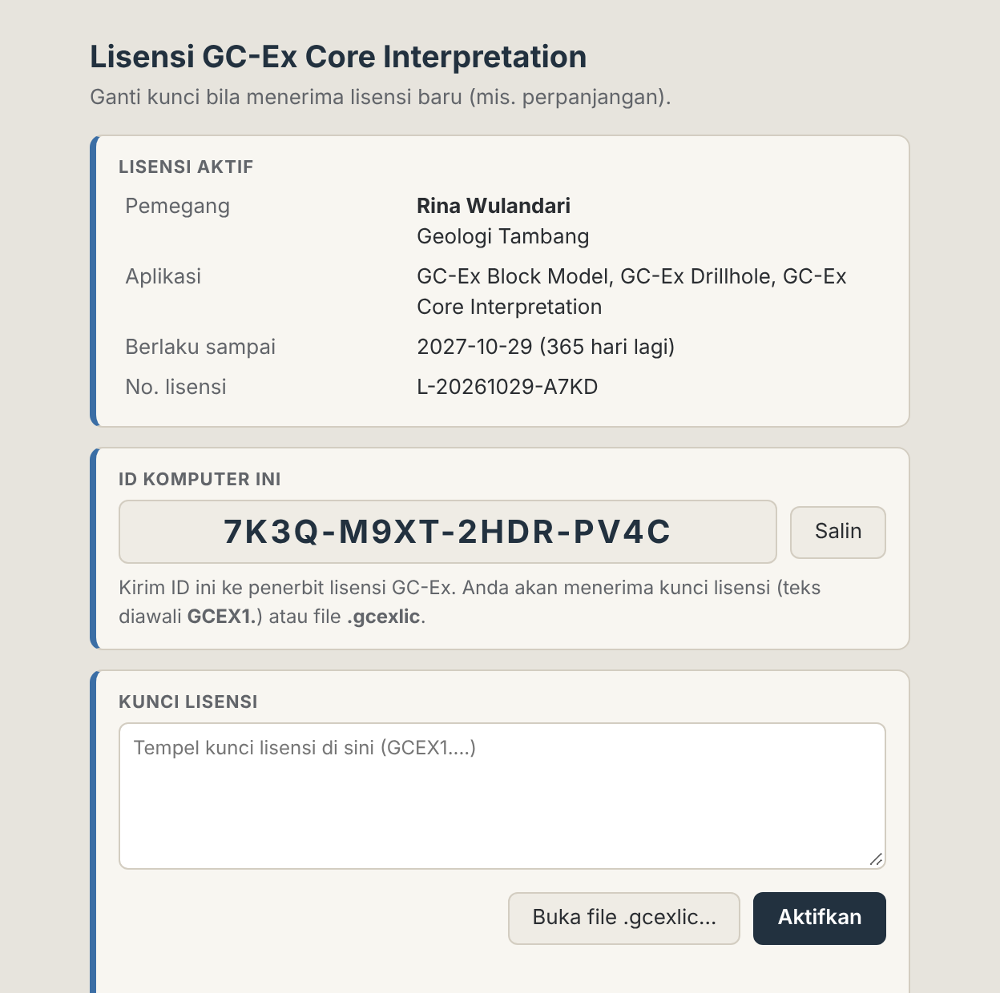
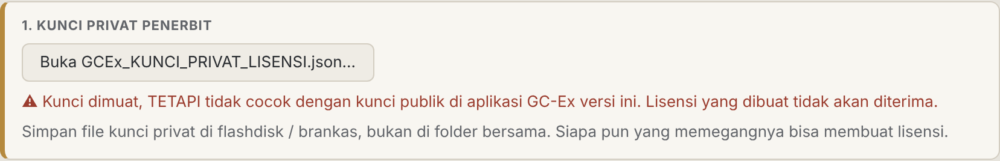
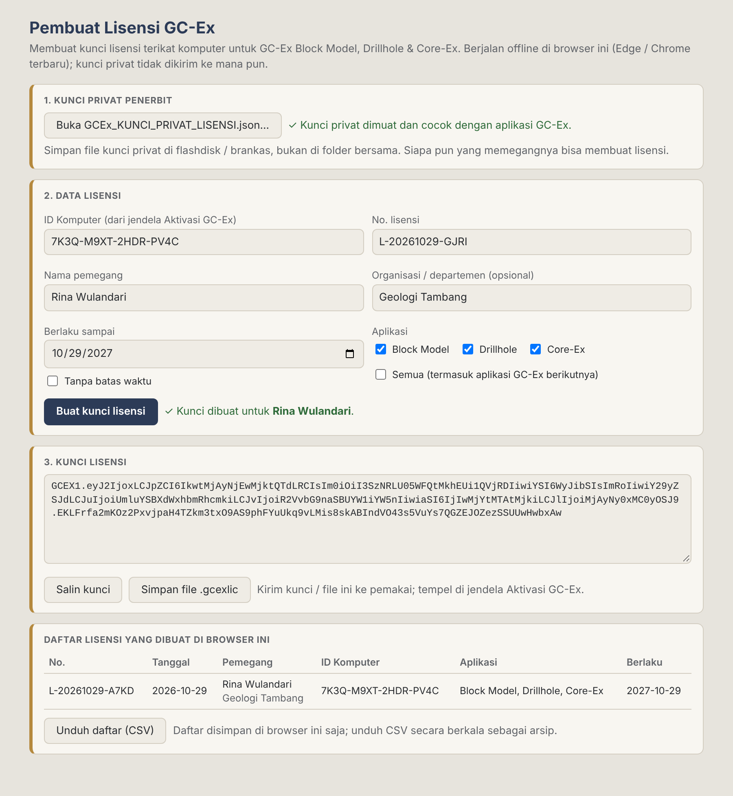

Setiap aplikasi GC-Ex perlu kunci lisensi yang terikat ke satu komputer. Aktivasi berjalan sepenuhnya offline: tidak perlu internet, tidak ada akun, tidak ada server. Kunci ditandatangani secara digital oleh penerbit, sehingga tidak bisa diubah atau dipindah ke komputer lain.
GCEX1.… atau buka file .gcexlic.%APPDATA%\GC-Ex Lisensi\lisensi.json.Jalankan installer (mis. DB-Ex-Setup-Windows.exe) lalu buka aplikasinya. Baca dan setujui Syarat Penggunaan yang muncul pertama kali.
Jendela Aktivasi muncul dan menampilkan ID Komputer ini (16 karakter, format XXXX-XXXX-XXXX-XXXX). Klik Salin, lalu kirim ID tersebut ke penerbit lisensi beserta nama Anda dan aplikasi yang dibutuhkan.

Penerbit akan mengirim salah satu dari dua bentuk berikut. Keduanya berisi kunci yang sama:
GCEX1.: tempel ke kotak Kunci lisensi, lalu klik Aktifkan (atau tekan Ctrl+Enter)..gcexlic: klik Buka file .gcexlic… dan pilih file-nya. Aktivasi berjalan otomatis.Salin kunci secara utuh, termasuk kedua titik di dalamnya. Spasi atau baris baru di awal dan akhir tidak masalah.
Bila kunci sah, muncul tanda ✓ Lisensi aktif… dan GC-Ex langsung terbuka. Berikutnya GC-Ex tidak akan meminta kunci lagi selama lisensi masih berlaku.


Buka menu Bantuan → Lisensi GC-Ex…. Jendela ini menampilkan pemegang, aplikasi yang tercakup, tanggal berlaku, dan nomor lisensi.

Kunci dibuat dengan alat GCEx_Pembuat_Lisensi.html (ada di folder tools/lisensi repositori). Alat ini berjalan offline di Microsoft Edge atau Google Chrome versi terbaru. Kunci privat tidak dikirim ke mana pun.
Klik dua kali GCEx_Pembuat_Lisensi.html, lalu klik Buka GCEx_KUNCI_PRIVAT_LISENSI.json… dan pilih file kunci privat dari flashdisk/brankas. Pastikan muncul ✓ Kunci privat dimuat dan cocok dengan aplikasi GC-Ex.

| Kolom | Isi |
|---|---|
| ID Komputer | Dari pengguna (Gambar A1). Huruf kecil dan karakter mirip (O/0, I/1) otomatis dirapikan. |
| No. lisensi | Terisi otomatis (L-TTTTBBHH-XXXX). Boleh diganti dengan penomoran sendiri. |
| Nama pemegang | Wajib. Tampil di jendela lisensi dan dialog Tentang. |
| Organisasi / departemen | Opsional. |
| Berlaku sampai | Bawaan 1 tahun dari hari ini, atau centang Tanpa batas waktu. |
| Aplikasi | Centang aplikasi yang boleh dipakai. Semua juga mencakup aplikasi GC-Ex berikutnya. |
Klik Buat kunci lisensi. Kunci muncul di kartu 3. Kirim ke pengguna dengan salah satu cara:

Setiap kunci tercatat di Daftar lisensi yang dibuat di browser ini. Daftar itu hanya tersimpan di browser tersebut dan bisa hilang bila riwayat browser dibersihkan. Klik Unduh daftar (CSV) secara berkala dan simpan bersama arsip lisensi.
GCEx_KUNCI_PRIVAT_LISENSI.json adalah "stempel" penerbit.
GCEX1.… / .gcexlic), jangan pernah file kunci privat.| Situasi | Yang dilakukan penerbit |
|---|---|
| Perpanjangan | Buat kunci baru dengan ID Komputer yang sama dan tanggal berlaku baru. |
| Menambah aplikasi (mis. DB-Ex) | Buat kunci baru dengan centang aplikasi yang lengkap. Kunci baru menggantikan yang lama. |
| Pengguna ganti komputer / install ulang Windows | Minta ID Komputer yang baru, lalu buat kunci baru. Catat di arsip bahwa kunci lama tidak dipakai lagi. |
| Nama/organisasi pemegang berubah | Buat kunci baru dengan data yang diperbarui. |
| Pesan di jendela Aktivasi | Penyebab dan solusi |
|---|---|
| Format kunci tidak dikenal. Kunci GC-Ex diawali "GCEX1." | Teks yang ditempel bukan kunci GC-Ex, atau awalnya terpotong. Salin ulang kunci secara utuh, atau pakai file .gcexlic. |
| Isi kunci rusak (salah salin?). | Sebagian karakter hilang atau berubah saat disalin (misalnya terpotong oleh aplikasi chat). Pakai file .gcexlic. |
| Tanda tangan kunci tidak sah (kunci diubah, terpotong, atau bukan dari penerbit GC-Ex). | Kunci diedit, bagian akhirnya terpotong, atau dibuat dengan kunci privat yang salah (lihat Gambar B1). Minta penerbit membuat ulang. |
| Kunci ini untuk komputer lain (ID …). ID komputer ini: … | ID Komputer yang dikirim ke penerbit tidak sama dengan komputer ini, misalnya tertukar dengan komputer lain atau Windows sudah di-install ulang. Kirim ID yang tampil di layar sekarang. |
| Kunci ini tidak berlaku untuk GC-Ex … (berlaku: …) | Aplikasi yang dibuka tidak tercentang di kunci. Minta kunci baru yang mencakup aplikasi tersebut. |
| Lisensi kedaluwarsa sejak … | Masa berlaku habis. Minta kunci perpanjangan ke penerbit. |
| Lisensi kedaluwarsa (…); tanggal komputer lebih awal dari pemakaian terakhir (…). | Jam sistem dimundurkan atau baterai CMOS lemah. Perbaiki tanggal dan jam Windows (atur otomatis), lalu minta kunci baru bila memang sudah kedaluwarsa. |
| Tempel kunci lisensi dulu. | Tombol Aktifkan diklik saat kotak kunci masih kosong. |
%APPDATA%\GC-Ex Lisensi, terpisah dari folder instalasi. Uninstall dan install ulang GC-Ex juga tidak menghapusnya.